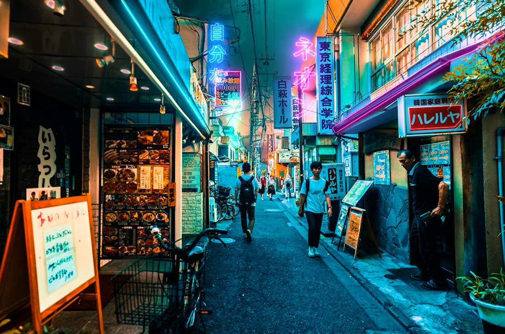
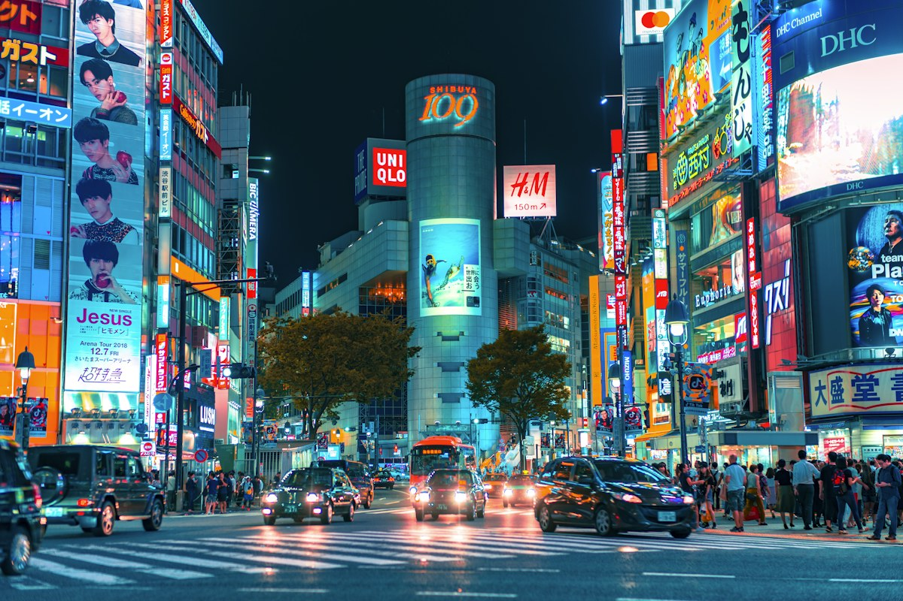
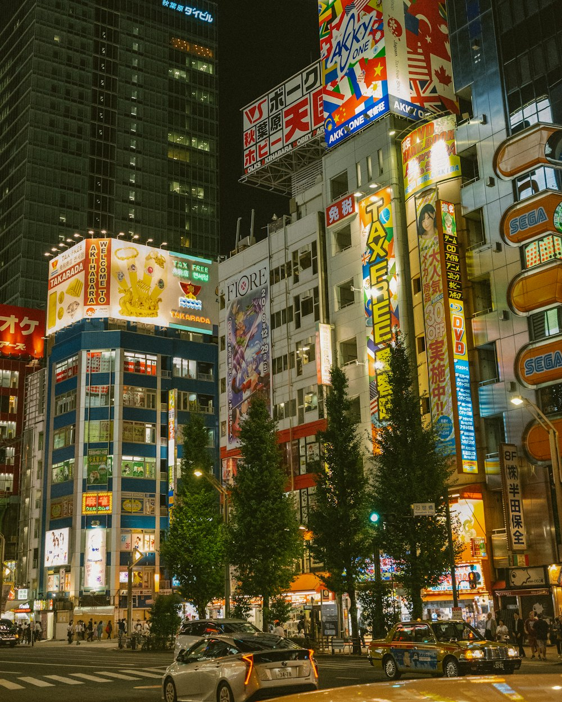
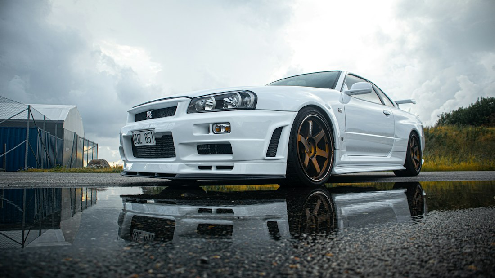
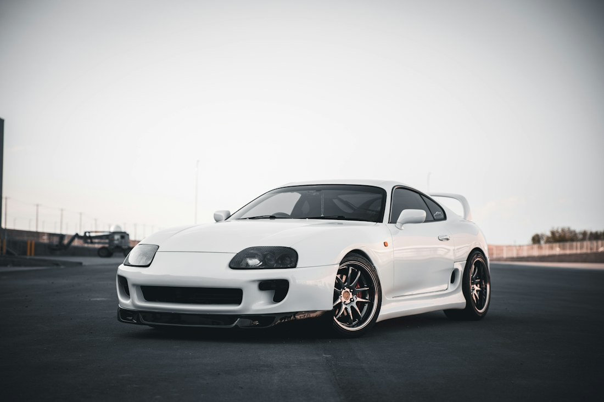
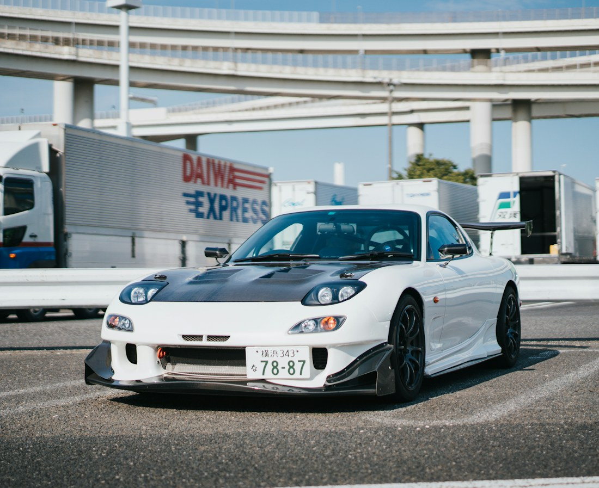

SHINJUKU
Layers of light, tiny side streets, and the feeling that the night has only just started.
NEON LIGHTS / SIDE STREETSTOKYO, JAPAN / MIDNIGHT ISSUE
Follow the neon. Find the side streets.
A love letter to Tokyo when the sun goes down.
One city. A thousand different nights.
01 / PICK A DIFFERENT PACE
Big-screen energy. Backstreet quiet.
Find the version of Tokyo that feels like you.

Layers of light, tiny side streets, and the feeling that the night has only just started.
NEON LIGHTS / SIDE STREETS
A meeting of people, sound, and street style. Stand still for a second. Take it all in.
STREET STYLE / BIG-CITY ENERGY
Arcade nostalgia, bold colors, and entire worlds behind a shop window. Stay curious.
GAME CULTURE / ELECTRIC COLOR02 / MORE THAN A POSTCARD
Tokyo is more than its brightest intersection. It is the glow of a vending machine, the last song from an upstairs record shop, and a quiet street one turn away from the noise.
This journal is for the details. The unexpected color. The beautifully ordinary. The moments you cannot fit on a checklist.
A few notes for the night03 / BUILT, NOT BOUGHT INTO
A little obsession. A lot of character.
Our love letter to Japanese car culture.

01 / THE MIDNIGHT ICON
Sharp lines. A familiar silhouette. Some cars make an impression before they make a sound.

02 / ANALOG SOUL
Tactile switches, purposeful design, and a connection that does not need a touchscreen.

03 / BUILT TO BE YOURS
The wheels, the color, the smallest finishing touch. A build is a portrait of its owner.
AN APPRECIATION OF DESIGN, CRAFT, AND THE PEOPLE BEHIND THE BUILDS.
04 / BEFORE YOU WANDER
Less of an itinerary.
More of a state of mind.